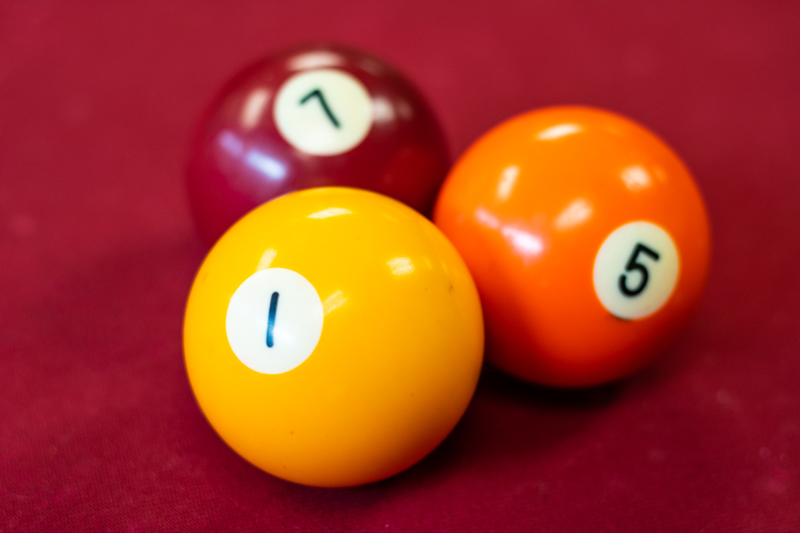
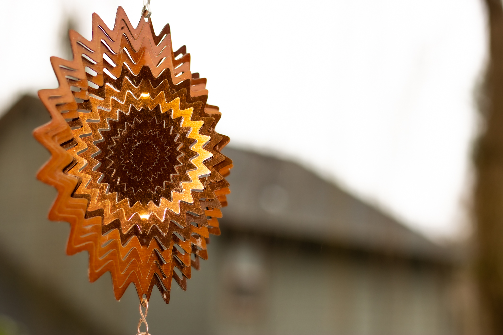
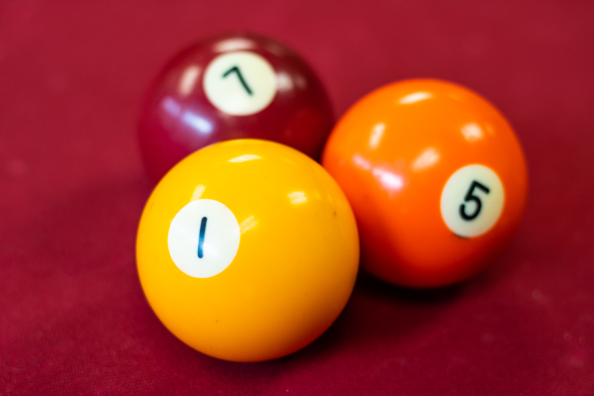
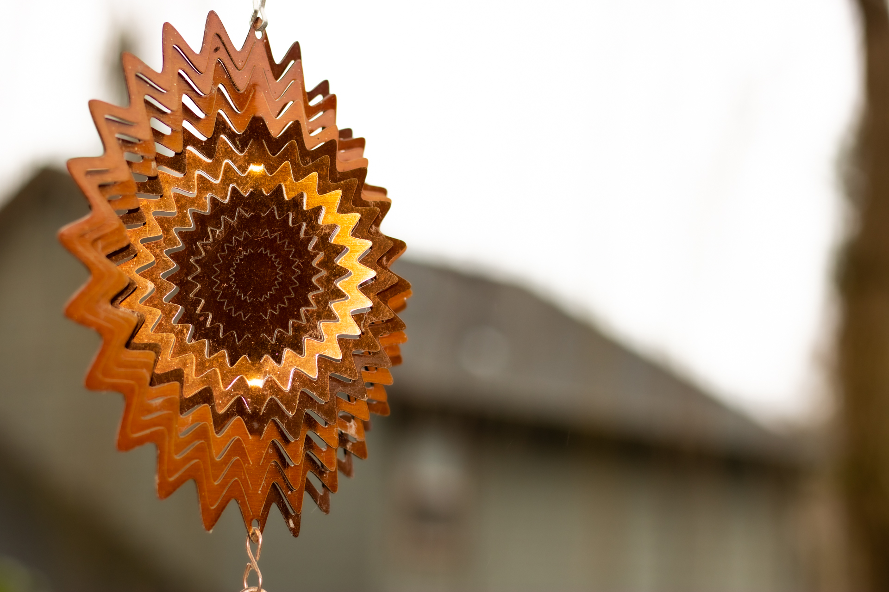
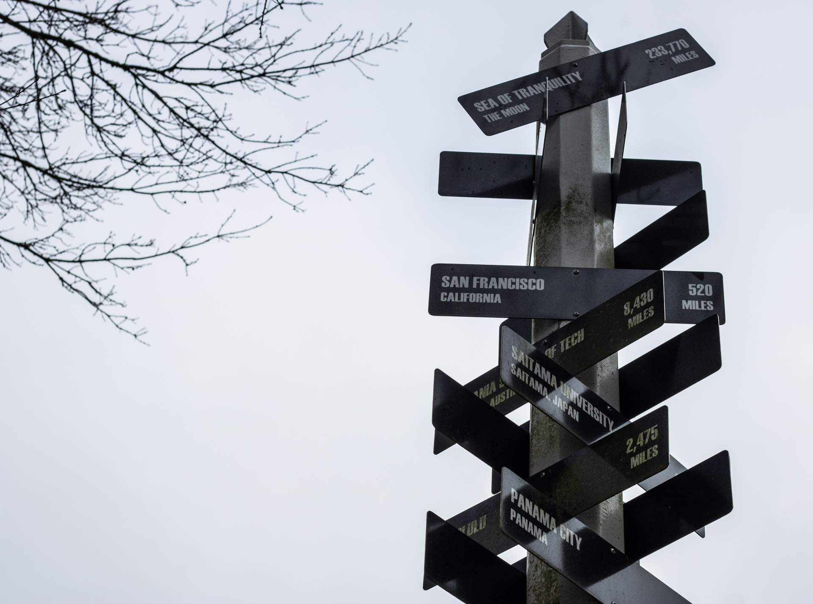
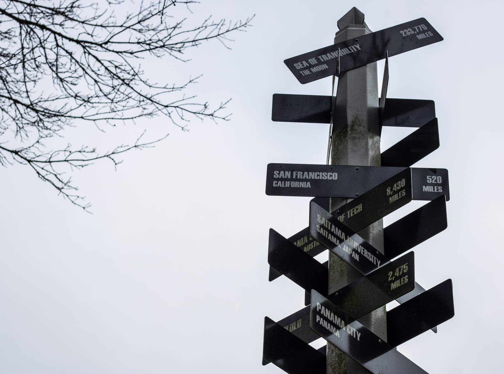

Nikko Robledo
Contact @ design@nikkorobledo.art

Nikko Robledo
Contact @ design@nikkorobledo.art

Nikko Robledo is a Graphic Designer located in Oregon who aspires to become a teacher and graduated with a BA in Visual Communication and Design. Nikko had always excelled academically but would constantly get caught filling his notebooks with drawings. But his teachers would rarely reprimand him and would instead be encouraging which has given him a lifelong love for art and education.

This project tasked students with creating a campaign for a non profit organization of their choice. The Marine Conservation Institute is an organization who works to preserve ocean ecosystems all over the world. This redesign of the Marine Conservation Institute’s logo simplifies it to be more in line with modern logo design without compromising the institute’s individuality. The icons that were created for the website’s similar shape, coloring, and nautical theming aid in creating harmony between not just the icons themselves, but the Marine Conservation Institute website as a whole.


This signage was created for Tualatin Hills Parks & Recreation to inform visitors via social media of the change in schedule for Labor Day. This design utilizes the red, white, and blue present on the American flag to evoke the festivites that one would commonly associate with Labor day. Through THPRD I made many similar signs for other holidays like the 4th of July and Veteran's Day as well, all with variants to be used for either social media or for use in facilities.


The desert landscape and vibrant colors that are utilized in this album cover serve to generate the more laid-back vibe that one would get from the summer season. The bold, white, stylized type on the cover stands out from the background and further clarifies the music that one should expect to hear when listening to this album.


Nicolai income insurance needed a clean and simple logo that wasn’t too busy and erred on the side of minimalism. The result was a versatile logo that could easily be implemented into business cards or the letterhead of important documents.


The slightly worn, golden design on this book immediately signals to the viewer that the contents of this book are rather dark in nature. The hands creeping upwards towards a crooked moon to form the odd shape of a skull in conjunction with the foreboding title generate a foreboding tone.


This poster serves as an advertisement for the PBS documentary, The Covid Contagion. The message that the coronavirus has been disproportionately affecting different racial groups is the main focus of the documentary and is clearly expressed in this poster. The gloomy and overall dark tone of the poster reinforces the ideas that it is trying to convey.


This skull design incorporates bright pinks and purples that really allow it to pop and gives it a very energetic feel. The combination of bright colors mingling with a dark subject like a skull gives this design a bit of a punk or rebel feel which fits perfectly within the skate culture allowing it to work well as a deck or clothing design.


The surrealist imagery featured in this design lends itself well to be used as the cover for a magazine due to it being very bright and eye catching. The visual of three faces being put together onto a single head and having a black bar over their eyes to conceal their identity is a concept that works well with the topic of evaporation, which is a disturbing trend in Japan in which companies help people to completely vanish from their current lives and is exactly the type of story to be covered in this type of magazine.

 a human being.jpg)
The deep and saturated reds and oranges in this piece of glitch art coupled with the subject matter give it an almost dystopian quality. The lack of any light in the man’s eyes and the words prominently featured stating “You are (not) a human being” express the sentiment that many people feel in that it can often times feel as though companies or even their government do not see them as individual people but instead just a set of numbers.
 a human being context 1.jpg)
Our world is full of beauty and intrigue wherever you go. It isn’t always easy to spot, sometimes you may need to get really close to an object, maybe step back to appreciate the big picture, or get down and dirty on your hands and knees. But if you look hard enough you’ll definitely see it and through the use of photography you can capture it.


 




 
